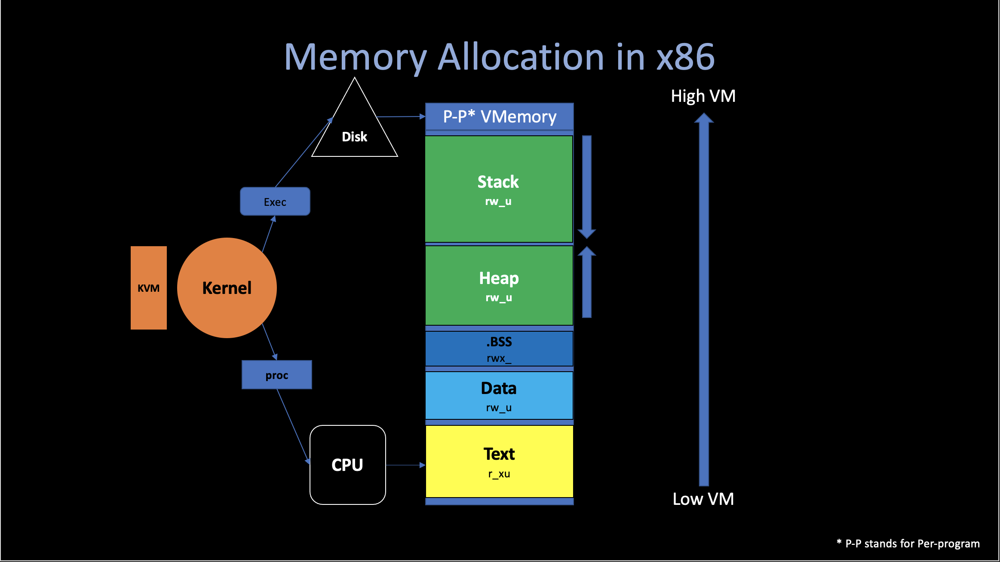
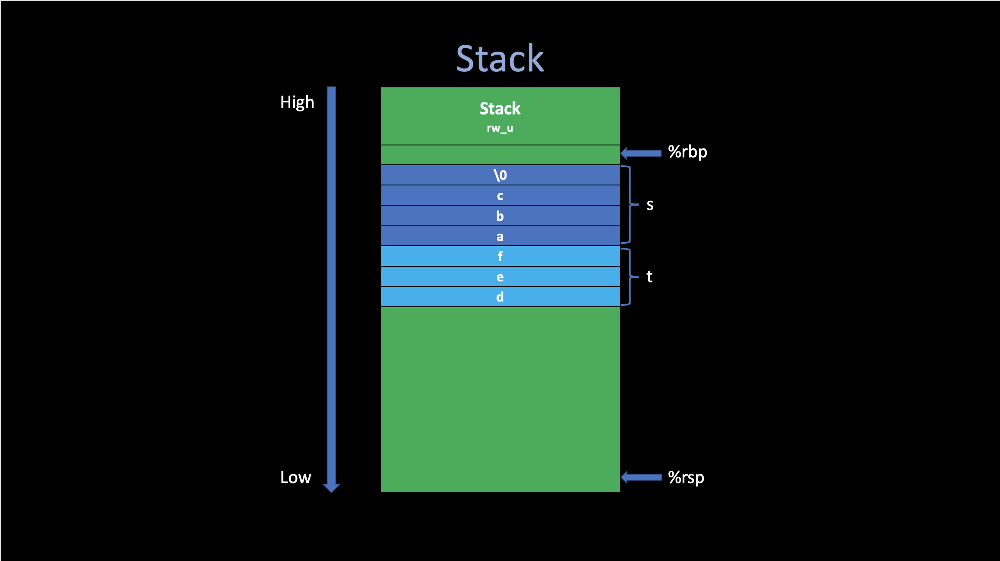
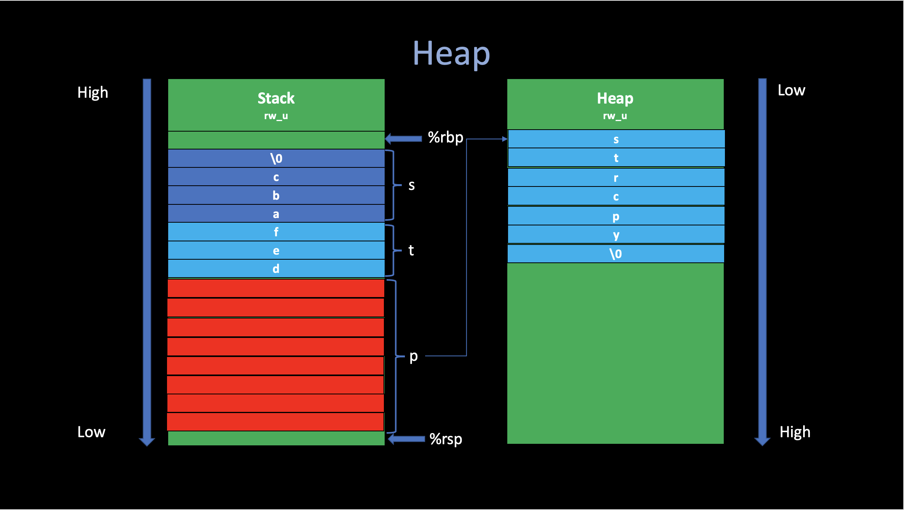
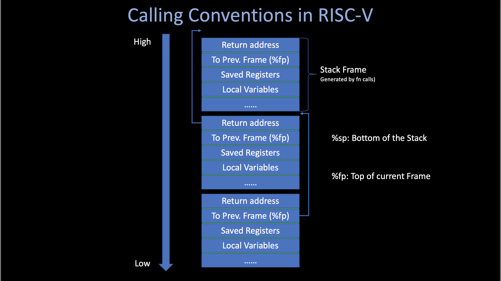
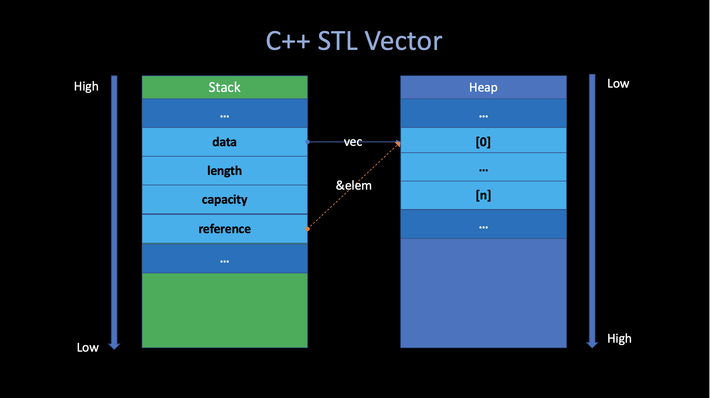

The Rust Programming Language
Angold Wang | 2022-03-24
1. Why Rust?
"Safe System Performance Programming"
- System Programming Language: C, C++.
- Safe Programming Language: ML, Haskell, Java
Mozilla trying to blend the best of both of these languages.
Why is Mozilla interested in creating a new programming language?
- Mozilla is the organization that created the Firefox web browser, current written in C++.
- Web browsers need a high degree of control over the machine.
- Doing very complex tasks very quickly (all these tabs running simultaneously)
- Web browsers need safety
- Running untrusted code, which is been downloaded from internet.
- Languages like C/C++ that give you the kind of control you need in order to get the performance, but also leave you open to all kinds of security vulnerabilities.
- Mozilla want to build the next generation web browser, which is a project called servo. And they wants to do it in a new language that tries to do better at giving you both control and safety at the same time.
2. Control - Case study: Zero-Cost Abstraction in C / C++
C and C++ is sort of the best existing language in this respect (control).
i. Memory Allocation

Basically, there are four places in Memory for C/C++ program to store data.
1. Stack
Most of the temporary variables created at runtime are stored in the stack. They are created (push) when the corresponding procedure is called and destroyed (pop) when returns.
Consider the following C code snippet:
char s[] = "abc"; // {'a', 'b', 'c', 'd', '\n'}
char t[3] = "def";
printf("s: %s\n", s);
printf("t: %s\n", t);
The output of this process looks strange:
s: abc
t: defabc
After check the generated assembly code in char.s, It is easy to figure out why t becomes defabc.
Since printf only stops looking for the next byte when encounters \0 (terminator). If we do not define the variable with the correct format and size, because these temp data are stored in the stack, sometimes it will cause some unexpected errors.

2. Text
The Text segment has e bit enabled, the compiler generate program instructions in this segment. And this segment also hardcodes all "strings" that was defined inside the function.
.section __TEXT,__cstring,cstring_literals
L___const.main.s: ## @__const.main.s
.asciz "abc"
.section __TEXT,__const
l___const.main.t: ## @__const.main.t
.ascii "def"
3. Heap
In C, the malloc() function will allocate a memory in Heap, and then return the begin address of that chunk of new memory.
char *p = malloc(6*sizeof(char));
strcpy(p, "strcpy");
printf("p: %s\n", p); // strcpy

4. Data
The Data segment contains global data. Which can be accessed from all functions in the current program.
.section __DATA,__data
.globl _data ## @data
.p2align 2
_data:
.long 12345 ## 0x3039
ii. Calling Conventions
The calling conventions describes the interface of the called code. Which makes the caller code can find what they wants (arguments, return address, fp ,etc.)

There are two kinds of the registers in Calling Conventions: caller and callee saved.
Caller-Saved Registers
Not preserved across the call. These are scratch registers - the callee is allowed to scribble over them. So if the caller cares about their contents, the caller must save them into stack before make the call.
Callee-Saved Registers
Preserved across the call. If the callee uses them, then the callee must restore the original values before returning.
Usage of %fp / %rbp
Except for addressing variables in stack, the frame pointer (also called base pointer) are also used in Back Trace. Which can print the calling stack during the fn calling conventions
void
backtrace(void) {
uint64 cur_fp = r_fp();
while (cur_fp != PGROUNDDOWN(cur_fp)) { // Page top
printf("%p\n", *(uint64 *)(cur_fp - 8)); // the return address
cur_fp = *(uint64 *)(cur_fp - 16); // next frame begin
}
}
iii. Zero-Cost Abstraction
When we say "Control" in programming language, it usually means "How much control we can get over the machine?"
For example, like what I mentioned earlier. If you declare a vector in C++ and you've read the STL code. You'll know exactly how that is going to be laid out in terms of the memory.
vector<int> vec;
auto& elem = vec[0];
In particular, in this code snipper. There are some field of the vector, including a pointer to the actuall data in the heap and some metadata about it, that all live on the stack. And you can have a lot of controls over the layout if you want.

One of the principles that you get out of C++ is something often called "Zero-cost abstraction". Which means you can build libraries like vector or string that are reasonably convinence to use (they give you nice abstraction). But if you compile it down. It is nothing different than you could have written by hand in assembly.